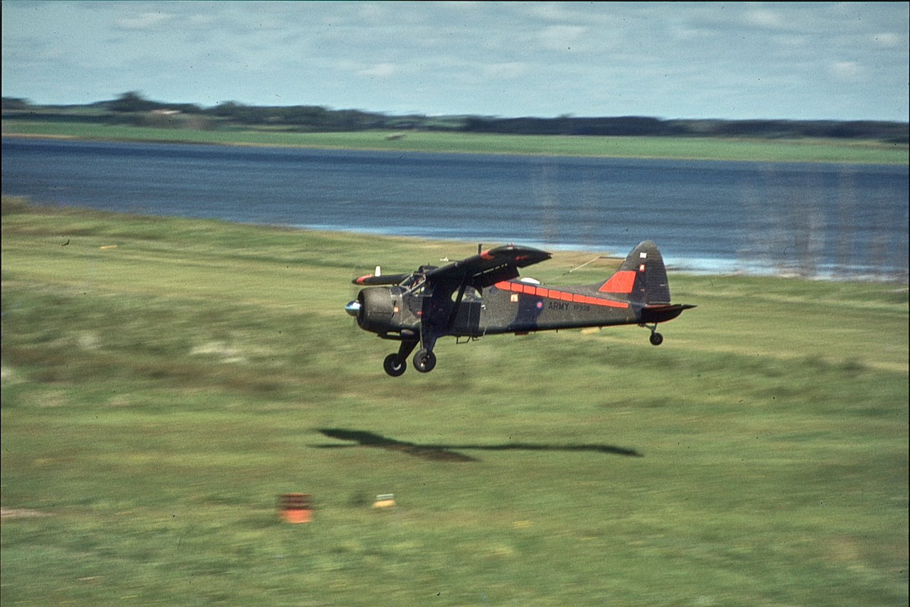
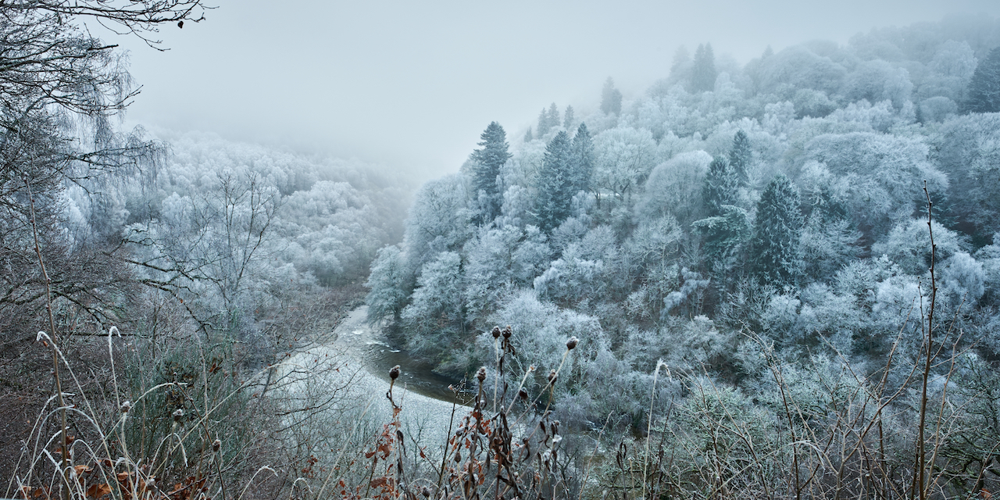
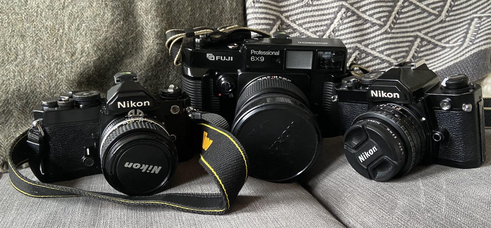
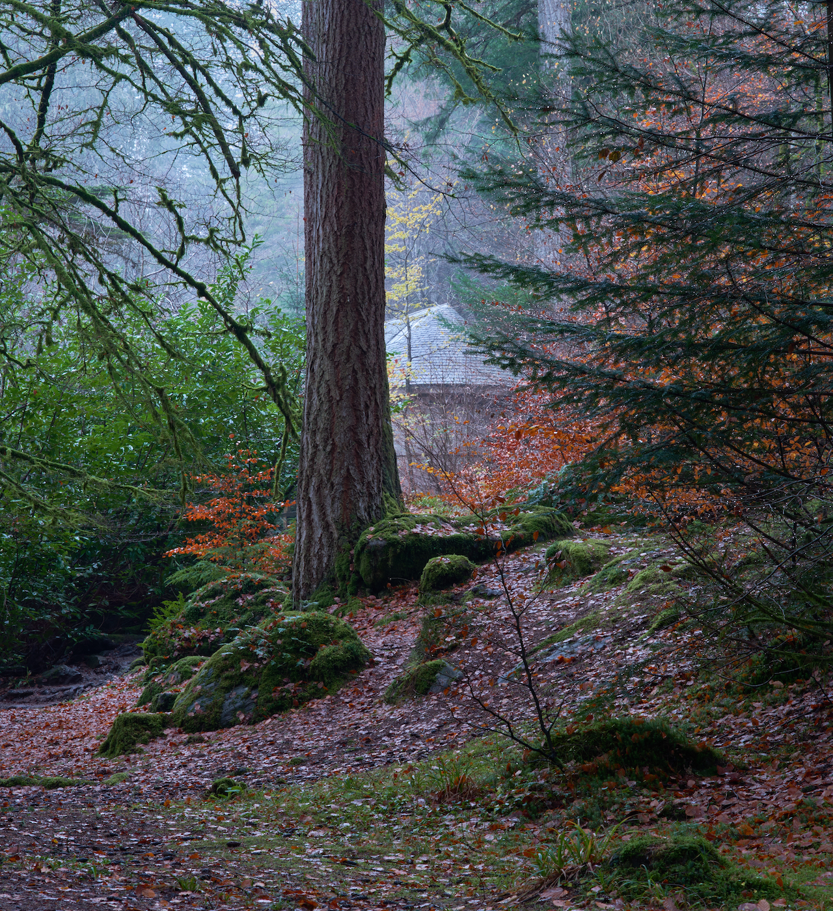

Nikon FM
My first “proper” camera was a Nikon FM SLR, which I bought second hand around 1977 in Hitchin with a 50mm F1.4 NIKKOR Ai-S lens. I soon after bought a Tamron 80-210mm zoom…
1st Mar 2022
We have become used to cameras being everywhere we go today, whether or not we have anything significant to record. Until recently – the past decade, perhaps – I have had a camera to hand if, on the spur of a moment, I needed to capture the scene. In the 20th century, it was a lot less usual for there to be a serendipidous camera available: the act of photography was more deliberate, usually requiring planning of some kind. That said, my family were no strangers to photography, and I am lucky enough to have inherited albums of photographs of relatives and their memories. Here is my mother with her grandfather and a chicken: the image connects me to the stories she told of him, and his chickens, and the days she grew up in Letchworth before and during The War. She was a keen follower of the habits of her age and captured moments in her life on still and cine film. She gave me my first camera, an Ilford, but I never really learned how to use it.
 A proper aeroplane. De Havilland Beaver, Ex. Pond Jump West, Canada, 1980.
I got back into the habit of taking photographs, starting with a couple of forgettable, probably Canon, point-and-shoots, and then a Canon “Powershot” bridge camera. It wasn’t long before I was frustrated by the limitations of these consumer products, designed as they are to protect the consumer from himself by idiot-proofing (like that now featuring in modern cars). I hate it when machines try to do the thinking. They’re rubbish at it.
Hagia Sofia Fuji X-E2 with the kit lens
After some extensive research and evaluation of cameras available within a reasonable budget (otherwise I’d have just bought a Hasselblad), I fell upon the Fuji X range of cameras. I don’t care what anyone says, these are by far the very best mid-priced digital cameras, because:
There are other reasons, of course, but these were enough for me. I bought an X-E2 with the 18-55mm kit lens and took it everywhere. I replaced it when the 24 Megapixel sensor came out, with the X-T2, which is as close as I could find in the Fuji X range to the Nikon FM SLR format I know and am comfortable with.
 Killiecrankie Fuji X-T2 with the XF16mmF1.4 R WR lens
I’ve never regretted it: the camera makes great images. With modern post-processing tools, I can construct really nice images from the RAW files. I don’t bother with other file formats except for publication (like on this site).
My wife and I were out taking photos on a frosty morning at the end of 2019 when we met a chap in the woods with a boxy-looking camera with a waist level viewfinder. This turned out to be a Hasselblad 500 of some kind and I asked him quite a lot of questions about medium format film photography. He had bought his camera at Ffordes in Inverness and I bought a dose of GAS1 from him. After a fair bit of reading and research, I decided I wanted to give medium format a try.
 Sisters These were the film cameras I was using at the start of 2020.
This lasted for a couple of years, and you can read the various stories here on the site, including my acquisition of knowledge and experience in exchange for hard cash. I’m not convinced the journey was worth it and am probably going to sell most of my film cameras early in 2023: the Hasselblad 503CW, the spare Nikon FM and even my Texas Leica. I just don’t get the chance to use them properly and do them justice. I will regret it, of course, I still ache for my old Rickenbacker, but it’s making images that I love, not exposing film to be processed when I have the time, often months later.
 Dunkeld, the Hermitage X-T2, Nikon A-iS 85mm f/1.4 lens
Digital is the way to go for me, although I am unlikely to part with my original Nikon FM and the two fabulous lenses I have for it. They fit nicely on my Fuji X-T and make what I believe to be beautiful images.
The Queensferry Crossing Ricoh GRIII
There is one camera that has been a quiet companion to all of this photographic adventure in recent years, which travels in the car or pretty much everywhere, and that is the incredible Ricoh GRIII. It’s a powerhouse of performance in a little package that has yielded some superb images, way beyond expectation for such a little machine. Click through to the Ricoh GRIII page and you’ll see what I mean. I’d happily ditch all of the other cameras in a lake if I could only keep one.
Late in 2022, I bought a new X-T5 body, not quite on a whim, more a promise. I was conscious that I have several very nice film cameras that are simply not being used. I spoke to several potential places and in the doldrums of January 2023, eventually boxed up three of my underused cameras (the Hasselblad, the big Fuji GW690ii and one of my Nikon FM cameras) and packed them off to Ffordes Photographic in Inverness who are selling them for me. The sale liberates these wonderful machines into the hands of those who might get better use from them, and liberates enough funds for the new digital camera. More information on the X-T5 below.
GAS = Gear Acquisition Syndrome. Photographers get it. Guitarists get it too.↩︎